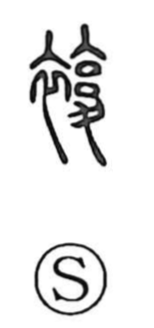

複

Uncategorized
Kun: | On: fuku
double ・ duplicate ・ multiple ・ to layer ・ to pile up
Explanation
A phono-semantic character: the clothing radical supplies the sphere of garments, while the phonetic element—an ancient form depicting an inverted measuring vessel used for gauging capacity—gives the reading fuku and the idea of doing something a second time. The Shuowen glosses it as kasane-goromo, clothing worn in layers, i.e., awase (lined garments), and further as a wadded winter robe. From this image of layered clothing the sense broadened to anything doubled or combined: things put together, piled up, or made in duplicate, and by extension, multiplicity.